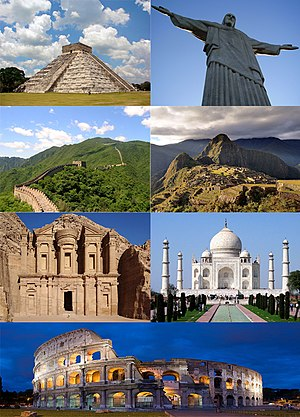
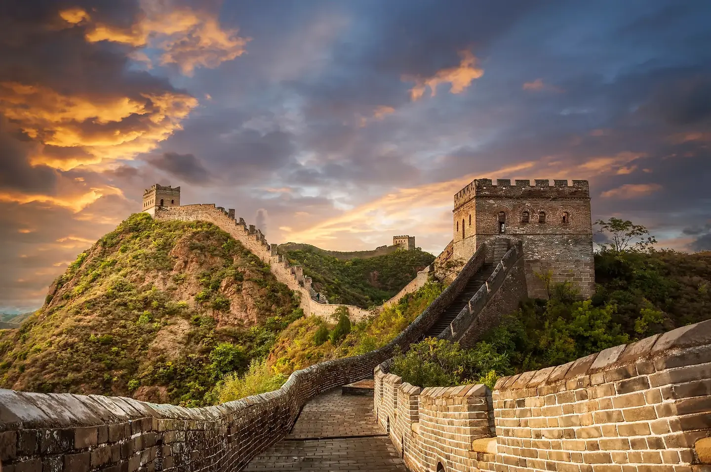
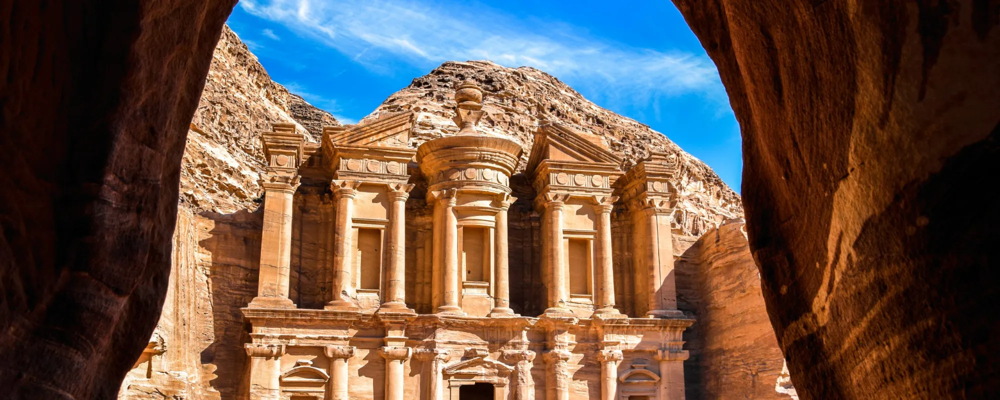
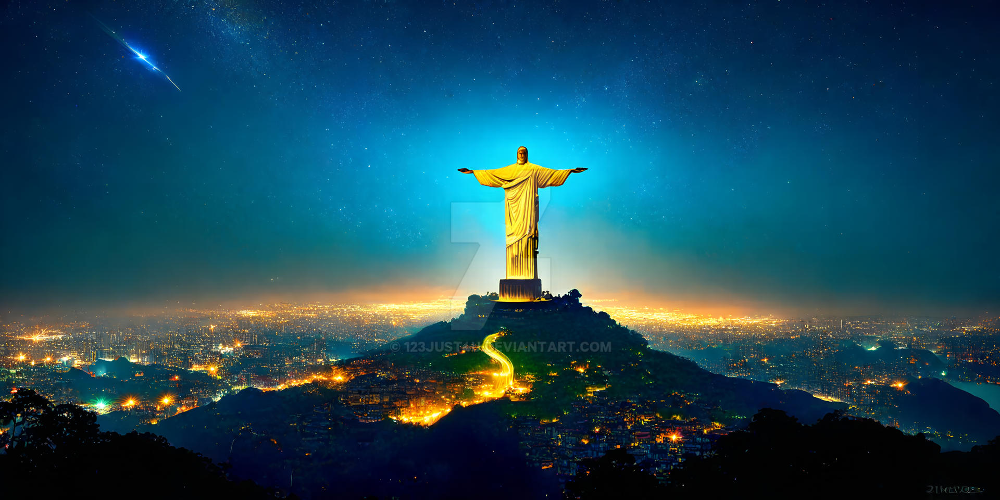
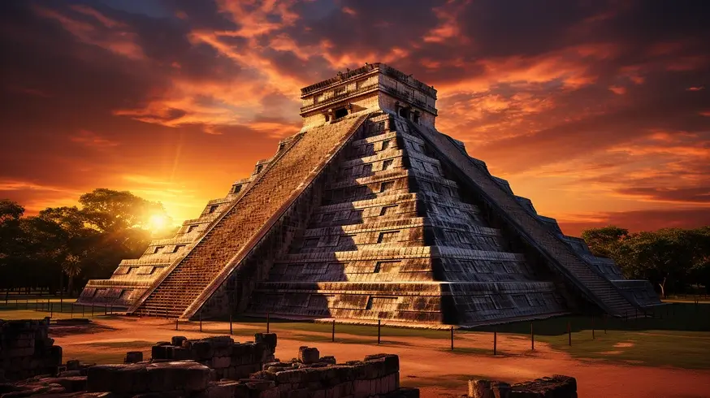
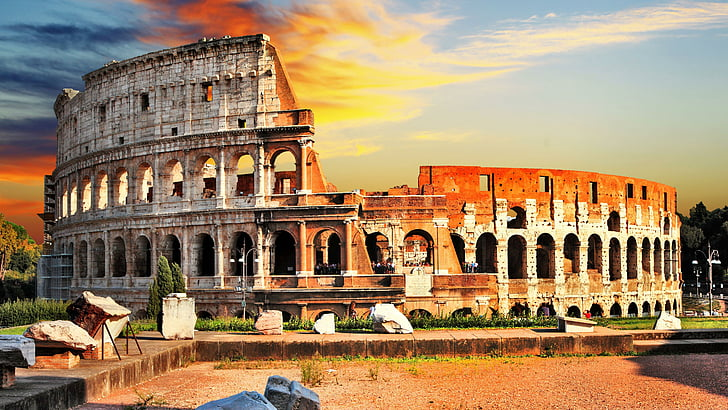
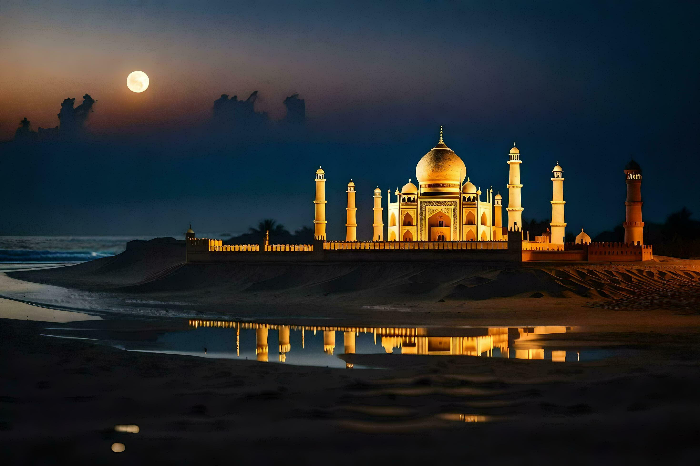

New Seven Wonders of the World
The New 7 Wonders of the World was a campaign started in 2001 to choose Wonders of the World from a selection of 200 existing monuments.[1] The popularity poll via free web-based voting and telephone voting was led by Canadian-Swiss Bernard Weber and organized by the New 7 Wonders Foundation (N7W) based in Zurich, Switzerland, with winners announced on 7 July 2007 at Estádio da Luz in Lisbon.[2][3][4][5] The poll was considered unscientific partly because it was possible for people to cast multiple votes.[6] According to John Zogby, founder and current President/CEO of the Utica, New York–based polling organization Zogby International, New 7 Wonders Foundation drove "the largest poll on record".[4]
In 2000 a Swiss foundation launched a campaign to determine the New Seven Wonders of the World. Given that the original Seven Wonders list was compiled in the 2nd century BCE—and that only one entrant is still standing (the Pyramids of Giza)—it seemed time for an update. And people around the world apparently agreed, as more than 100 million votes were cast on the Internet or by text messaging. The final results, which were announced in 2007, were met with cheers as well as some jeers—a number of prominent contenders, such as Athens’s Acropolis, failed to make the cut. Do you agree with the new list?
The program drew a wide range of official reactions. Some countries touted their finalist and tried to get more votes cast for it, while others downplayed or criticized the contest.[4][6] After supporting the New 7 Wonders Foundation at the beginning of the campaign by providing advice on nominee selection, the United Nations Educational, Scientific, and Cultural Organization (UNESCO), bound by its bylaws to record and give equal status to all World Heritage Sites, distanced itself from the undertaking in 2001 and again in 2007.[7][8]
The 7 winners were chosen from 21 candidates, which had been whittled down from 77 choices by a panel in 2006.
Great Wall of China
The New 7 Wonders Foundation, established in 2001, relied on private donations and the sale of broadcast rights and received no public funding.[9] After the final announcement, New 7 Wonders said it did not earn anything from the exercise and barely recovered its investment.[10] Although N7W describes itself as a not-for-profit organization, the company behind it—the New Open World Corporation (NOWC)—is a commercial business. All licensing and sponsorship money is paid to NOWC.
The foundation ran two subsequent programs: New 7 Wonders of Nature, the subject of voting until 2011, and New7Wonders Cities, which ended in 2014.
The Seven Wonders of the World are remarkable constructions known for their historical significance and architectural beauty. They include:
United Nations
In 2007, the New 7 Wonders Foundation contracted a partnership with the United Nations in recognition of the efforts to promote the UN's Millennium Development Goals.[12][failed verification] However, the United Nations Educational, Scientific and Cultural Organization (UNESCO), in a press release on June 20, 2007, reaffirmed that it has no link with the initiative. The press release concluded:[8] There is no comparison between Mr. Weber's mediatized campaign and the scientific and educational work resulting from the inscription of sites on UNESCO's World Heritage List. The list of the 8 New Won cannot, in any significant and sustainable manner, contribute to the preservation of sites elected by this public.
Brazil
In Brazil there was a campaign Vote no Cristo (Vote for the Christ) which had the support of private companies, namely telecommunications operators that stopped charging voters to make telephone calls and SMS messages to vote.[13] Additionally, leading corporate sponsors including Banco Bradesco and Rede Globo spent millions of reals in the effort to have the statue voted into the top seven.[4] Newsweek reports the campaign was so pervasive that:[4]
One morning in June, Rio de Janeiro residents awoke to a beeping text message on their cell phones: "Press 4916 and vote for Christ. It's free!" The same pitch had been popping up all over the city since late January—flashing across an electronic screen every time city-dwellers swiped their transit cards on city buses and echoing on TV infomercials that featured a reality-show celebrity posing next to the city's trademark Christ the Redeemer statue.
— Elizabeth Dwoskin, Newsweek
According to an article in Newsweek, around 10 million Brazilians had voted in the contest by early July.[4] This number is estimated as the New 7 Wonders Foundation never released such details about the campaign. An airplane message, with a huge inscription "4916 VOTE FOR CHRIST" flew in Rio de Janeiro for a month.
Peru
An intensive campaign led by the Peruvian Ministry of Commerce and Tourism in Peru had a great impact in the media and consequently, Peruvian people voted massively for its national wonder. The announcement of the new World Wonders generated great expectations and the election of Machu Picchu was celebrated nationwide.
Chile
The Chilean representative for Easter Island's Moais, Alberto Hortus, said Weber gave him a letter saying that the Moais had finished eighth and were morally one of the New 7 Wonders. Hortus said he was the only participant to receive such an apology
India
A campaign to publicize the Taj Mahal in India gathered speed and it reached a climax in July 2007 with news channels, radio stations, and many celebrities asking people to vote for the Taj Mahal.
Jordan
Queen Rania Al-Abdullah of Jordan joined the campaign to back Petra, Jordan's national treasure.[4]
Mexico
There was a campaign on the news programs to encourage people to vote for Chichen Itzá.[citation needed]
The Great Wall of China (traditional Chinese: 萬里長城; simplified Chinese: 万里长城; pinyin: Wànlǐ Chángchéng, literally "ten thousand li long wall") is a series of fortifications that were built across the historical northern borders of ancient Chinese states and Imperial China as protection against various nomadic groups from the Eurasian Steppe. Several walls were built from as early as the 7th century BC,[4] with selective stretches later joined by Qin Shi Huang (220–206 BC), the first emperor of China. Little of the Qin wall remains.[5] Later on, many successive dynasties built and maintained multiple stretches of border walls. The best-known sections of the wall were built by the Ming dynasty (1368–1644).
Apart from defense, other purposes of the Great Wall have included border controls, allowing the imposition of duties on goods transported along the Silk Road, regulation or encouragement of trade and the control of immigration and emigration.[6] Furthermore, the defensive characteristics of the Great Wall were enhanced by the construction of watchtowers, troop barracks, garrison stations, signaling capabilities through the means of smoke or fire, and the fact that the path of the Great Wall also served as a transportation corridor.
The frontier walls built by different dynasties have multiple courses. Collectively, they stretch from Liaodong in the east to Lop Lake in the west, from the present-day Sino–Russian border in the north to Tao River (Taohe) in the south; along an arc that roughly delineates the edge of the Mongolian steppe; spanning 21,196.18 km (13,170.70 mi) in total.[7][3] Today, the defensive system of the Great Wall is generally recognized as one of the most impressive architectural feats in history.[8]
Petra
Petra (Arabic: ٱلْبَتْراء, romanized: Al-Batrāʾ; Ancient Greek: Πέτρα, "Rock"), originally known to its inhabitants as Raqmu (Nabataean: 𐢛𐢚𐢒 or 𐢛𐢚𐢓𐢈, *Raqēmō),[3][4] is a historic and archaeological city in southern Jordan. Famous for its rock-cut architecture and water conduit systems, Petra is also called the "Rose City" because of the colour of the sandstone from which it is carved.[5] The city is one of the New 7 Wonders of the World and a UNESCO World Heritage Site.[6]
The area around Petra has been inhabited from as early as 7000 BC,[7] and was settled by the Nabataeans, a nomadic Arab people, in the 4th century BC. Petra would later become the capital city of the Nabataean Kingdom in the second century BC.[7][8] The Nabataeans invested in Petra's proximity to the incense trade routes by establishing it as a major regional trading hub, which gained them considerable revenue.[7][9] Unlike their enemies, the Nabataeans were accustomed to living in the barren deserts and thus were able to defend their kingdom. They were particularly skillful in agriculture, stone carving, and rainwater harvesting.
Petra flourished in the 1st century AD, when its Al-Khazneh structure, possibly the mausoleum of Nabataean king Aretas IV, was constructed, and its population peaked at an estimated 20,000 inhabitants.[10] Nabataea fell to the Romans in 106 AD, who annexed and renamed it Arabia Petraea.[11] Petra's importance declined as sea trade routes emerged, and after an earthquake in 363 destroyed many structures. In the Byzantine era, several Christian churches were built, but the city continued to decline and, by the early Islamic era, it was abandoned except for a handful of nomads. It remained unknown to the western world until 1812, when Swiss traveller Johann Ludwig Burckhardt rediscovered it.[12
UNESCO has described Petra as "one of the most precious cultural properties of man's cultural heritage".[13] Petra is a symbol of Jordan, as well as Jordan's most-visited tourist attraction. Visitor numbers reach close to a million tourists every year.
History
Neolithic
by 7000 BC, some of the earliest recorded farmers had settled in Beidha, a Pre-Pottery Neolithic settlement just north of Petra.[
Bronze Age
Petra is listed in Egyptian campaign accounts and the Amarna letters as Pel, Sela, or Seir
Iron Age Edom
The Iron Age lasted between 1200 and 600 BC; in that time, the Petra area was occupied by the Edomites. The configuration of mountains in Petra allowed for a reservoir of water for the Edomites. This made Petra a stopping ground for merchants, making it an outstanding area for trade. Things that were traded here included wines, olive oil, and wood.
Initially, the Edomites were accompanied by Nomads who eventually left, but the Edomites stayed and made their mark on Petra before the emergence of the Nabataens. It is said that 10,000 men were thrown off of the mountain Umm el-Biyara, but this story has been debated by scholars.
The Edomite site excavated at the top of the Umm el-Biyara mountain at Petra was established no earlier than the seventh century BC (Iron II).[17]
Emergence of Petra
The Nabataeans were one among several nomadic Bedouin tribes that roamed the Arabian Desert and moved with their herds to wherever they could find pasture and water.[18] Although the Nabataeans were initially embedded in Aramaic culture, theories about them having Aramean roots are rejected by many modern scholars. Instead, archaeological, religious and linguistic evidence confirm that they are a northern Arabian tribe.[19] Current evidence suggests that the Nabataean name for Petra was Raqēmō, variously spelled in inscriptions as rqmw or rqm.[4]
The Jewish historian Josephus (ca. 37–100 AD) writes that the region was inhabited by the Midianites during the time of Moses, and that they were ruled by five kings, one of whom was Rekem. Josephus mentions that the city, called Petra by the Greeks, "ranks highest in the land of the Arabs" and was still called Rekeme by all the Arabs of his time, after its royal founder (Antiquities iv. 7, 1; 4, 7).[20] The Onomasticon of Eusebius also identified Rekem as Petra.[21] Arabic raqama means "to mark, to decorate", so Rekeme could be a Nabataean word referring to the famous carved rock façades. In 1964, workmen clearing rubble away from the cliff at the entrance to the gorge found several funerary inscriptions in Nabatean script. One of them was to a certain Petraios who was born in Raqmu (Rekem) and buried in Garshu (Jerash).[2
An old theory held that Petra might be identified with a place called sela in the Hebrew Bible. Encyclopædia Britannica (1911) states that the Semitic name of the city, if not Sela, would remain unknown. It nevertheless cautioned that sela simply means "rock" in Hebrew, and thence might not be identified with a city where it occurs in the biblical text in the book of Obadiah. It is possible that the city was part of the nation of Edom.[
The passage in Diodorus Siculus (xix. 94–97) which describes the expeditions which Antigonus sent against the Nabataeans in 312 BC, was understood by some researchers to throw some light upon the history of Petra, but the "petra" (Greek for rock) referred to as a natural fortress and place of refuge cannot be a proper name, and the description implies that there was no town in existence there at the time
Christ the Redeemer
Christ the Redeemer (Portuguese: Cristo Redentor, standard Brazilian Portuguese: [ˈkɾistu ʁedẽˈtoʁ]) is an Art Deco statue of Jesus in Rio de Janeiro, Brazil, created by French-Polish sculptor Paul Landowski and built by Brazilian engineer Heitor da Silva Costa, in collaboration with French engineer Albert Caquot. Romanian sculptor Gheorghe Leonida sculpted the face. Constructed between 1922 and 1931, the statue is 30 metres (98 ft) high, excluding its 8-metre (26 ft) pedestal. The arms stretch 28 metres (92 ft) wide.[1][2] It is made of reinforced concrete and soapstone.[3][4][5] Christ the Redeemer differs considerably from its original design, as the initial plan was a large Christ with a globe in one hand and a cross in the other. Although the project organizers originally accepted the design, it later changed to the statue of today, with the arms spread out wide.
The statue weighs 635 metric tons (625 long, 700 short tons), and is located at the peak of the 700-metre (2,300 ft) Corcovado mountain in the Tijuca National Park overlooking the city of Rio de Janeiro. This statue is the largest Art Deco–style sculpture in the world.[6] A symbol of Christianity around the world, the statue has also become a cultural icon of both Rio de Janeiro and Brazil and was voted one of the New 7 Wonders of the World.[7]
History
Vincentian priest Pedro Maria Boss first suggested placing a Christian monument on Mount Corcovado in the mid-1850s to honor Princess Isabel, regent of Brazil and the daughter of Emperor Pedro II, but the project was not approved.[1] In 1889, the country became a republic, and owing to the separation of church and state, the proposed statue was dismissed.[8]
The Catholic Circle of Rio made a second proposal for a landmark statue on the mountain in 1920.[9] The group organized an event called Semana do Monumento ("Monument Week") to attract donations and collect signatures to support the building of the statue. The organization was motivated by what they perceived as "Godlessness" in the society. The donations came mostly from Brazilian Catholics.[3] The designs considered for the "Statue of the Christ" included a representation of the Christian cross, a statue of Jesus with a globe in his hands, and a pedestal symbolizing the world.[10] Eventually, the statue of Christ the Redeemer with open arms, a symbol of peace, was chosen.
Local engineer Heitor da Silva Costa and artist Carlos Oswald designed the statue.[11] French sculptor Paul Landowski created the work.[12]
In 1922, Landowski commissioned fellow Parisian Romanian sculptor Gheorghe Leonida, who studied sculpture at the Fine Arts Conservatory in Bucharest and in Italy.[13]
A group of engineers and technicians studied Landowski's submissions, and they felt building the structure out of reinforced concrete (designed by Albert Caquot) instead of steel was more suitable for the cross-shaped statue. The concrete making up the base was supplied from Limhamn, Sweden.[14][15] The outer layers are soapstone, chosen for its enduring qualities and ease of use.[4] Construction took nine years, from 1922 to 1931, and cost the equivalent of US$250,000 (equivalent to $4,300,000 in 2023) and the monument opened on October 12, 1931.[4][5] During the opening ceremony, the statue was to be lit by a battery of floodlights turned on remotely by Italian shortwave radio inventor Guglielmo Marconi, stationed 9,200 kilometres (5,700 mi) away in Rome but because of bad weather, the lights were activated on site.[9]
In October 2006, on the 75th anniversary of the statue's completion, Cardinal Eusebio Oscar Scheid, Archbishop of Rio, consecrated a chapel, named after Brazil's patron saint—Our Lady of the Apparition—under the statue, allowing Catholics to hold baptisms and weddings there.[5]
Lightning struck the statue during a violent thunderstorm on February 10, 2008, causing some damage to the fingers, head and eyebrows. The Rio de Janeiro state government initiated a restoration effort to replace some of the outer soapstone layers and repair the lightning rods on the statue. Lightning damaged it again on January 17, 2014, dislodging a finger on the right hand.[16][17][18][19]
In 2010, a massive restoration of the statue began. Work included cleaning, replacing the mortar and soapstone on the exterior, restoring iron in the internal structure, and waterproofing the monument. Vandals attacked the statue during renovation, spraying paint along the arm. Mayor Eduardo Paes called the act "a crime against the nation". The culprits later apologized and presented themselves to the police.[20][21][22]
In reference to Brazil striker Ronaldo's usual goal celebration of both arms outstretched, the Pirelli tyre company ran a 1998 commercial in which he replaced the statue while in an Inter Milan strip.[23] The commercial was controversial with the Catholic Church.[24]
Machu Picchu
Machu Picchu[a] is a 15th-century Inca citadel located in the Eastern Cordillera of southern Peru on a mountain ridge at 2,430 meters (7,970 ft).[9] Often referred to as the "Lost City of the Incas",[10] it is the most familiar icon of the Inca Empire. It is located in the Machupicchu District within the Urubamba Province[11] above the Sacred Valley, which is 80 kilometers (50 mi) northwest of the city of Cusco. The Urubamba River flows past it, cutting through the Cordillera and creating a canyon with a subtropical mountain climate.[12]

The Inca civilization had no written language and following the first encounter by the Spanish soldier Baltasar Ocampo, no Europeans are recorded to have visited the site from the late 16th century until the 19th century. As far as historical knowledge extends, there are no existing written records detailing the site during its period of active use. The leading theory is that Machu Picchu was a private city for Incan royalty. The names of the buildings, their supposed uses, and their inhabitants, are the product of modern archaeologists based on physical evidence, including tombs at the site. Machu Picchu was built in the classical Inca style, with polished dry-stone walls. Its three primary structures are the Temple of the Sun, the Temple of the Three Windows, and the Intihuatana. From 1929 to 1971, Machu Picchu underwent extensive restoration and conservation work, including structural stabilization and artifact excavation, driven by government initiatives and research expeditions.[13] Most recent archaeologists believe that Machu Picchu was constructed as an estate for the Inca emperor Pachacuti (1438–1472). The Inca built the estate around 1450 but abandoned it a century later, at the time of the Spanish conquest. According to the new AMS radiocarbon dating, it was occupied from c. 1420–1532.[14] Historical research published in 2022 claims that the site was probably called Huayna Picchu by the Inca people themselves, as it exists on the smaller peak of the same name.[15][16]
History
Machu Picchu was previously believed (by Richard L. Burger, professor of anthropology at Yale University) to have been built in the 1450s.[1] However, a 2021 study led by Burger used radiocarbon dating (specifically, AMS) to reveal that Machu Picchu may have been occupied from around 1420 to 1530 AD.[21][22] Construction appears to date from two great Inca rulers, Pachacutec Inca Yupanqui (1438–1471) and Túpac Inca Yupanqui (1472–1493).[23][24]: xxxvi
A consensus among archaeologists is that Pachacutec ordered the construction of the royal estate for his use as a retreat, most likely after a successful military campaign. Although Machu Picchu is considered to be a "royal" estate, it would not have been passed down in the line of succession. Rather it was used for 80 years before being abandoned, seemingly because of the Spanish conquests in other parts of the Inca Empire.[1] It is possible that most of its inhabitants died from smallpox introduced by travelers before the Spanish conquistadors even arrived in the area.[25]
Chichen Itza
Chichén Itzá[nb 1] (often spelled Chichen Itza in English and traditional Yucatec Maya) Yucatec Maya pronunciationⓘ was a large pre-Columbian city built by the Maya people of the Terminal Classic period. The archeological site is located in Tinúm Municipality, Yucatán State, Mexico.[1]
Chichén Itzá was a major focal point in the Northern Maya Lowlands from the Late Classic (c. AD 600–900) through the Terminal Classic (c. AD 800–900) and into the early portion of the Postclassic period (c. AD 900–1200). The site exhibits a multitude of architectural styles, reminiscent of styles seen in central Mexico and of the Puuc and Chenes styles of the Northern Maya lowlands. The presence of central Mexican styles was once thought to have been representative of direct migration or even conquest from central Mexico, but most contemporary interpretations view the presence of these non-Maya styles more as the result of cultural diffusion.
Chichén Itzá was one of the largest Maya cities and it was likely to have been one of the mythical great cities, or Tollans, referred to in later Mesoamerican literature.[2] The city may have had the most diverse population in the Maya world, a factor that could have contributed to the variety of architectural styles at the site.[3
The ruins of Chichén Itzá are federal property, and the site's stewardship is maintained by Mexico's Instituto Nacional de Antropología e Historia (National Institute of Anthropology and History). The land under the monuments had been privately owned until 29 March 2010, when it was purchased by the state of Yucatán.[nb 2]
Chichén Itzá is one of the most visited archeological sites in Mexico with over 2.6 million tourists in 2017.[4]
History
The layout of Chichén Itzá site core developed during its earlier phase of occupation, between 750 and 900 AD.[19] Its final layout was developed after 900 AD, and the 10th century saw the rise of the city as a regional capital controlling the area from central Yucatán to the north coast, with its power extending down the east and west coasts of the peninsula.[20] The earliest hieroglyphic date discovered at Chichen Itza is equivalent to 832 AD, while the last known date was recorded in the Osario temple in 998.[21]
Establishment
The Late Classic city was centered upon the area to the southwest of the Xtoloc cenote, with the main architecture represented by the substructures now underlying the Las Monjas and Observatorio and the basal platform upon which they were built.[22]
Ascendancy
Chichén Itzá rose to regional prominence toward the end of the Early Classic period (roughly 600 AD). It was, however, toward the end of the Late Classic and into the early part of the Terminal Classic that the site became a major regional capital, centralizing and dominating political, sociocultural, economic, and ideological life in the northern Maya lowlands. The ascension of Chichen Itza roughly correlates with the decline and fragmentation of the major centers of the southern Maya lowlands.
As Chichén Itzá rose to prominence, the cities of Yaxuna (to the south) and Coba (to the east) were suffering decline. These two cities had been mutual allies, with Yaxuna dependent upon Coba. At some point in the 10th century Coba lost a significant portion of its territory, isolating Yaxuna, and Chichen Itza may have directly contributed to the collapse of both cities.[23]
Roman Colosseum
The Colosseum (/ˌkɒləˈsiːəm/ KOL-ə-SEE-əm; Italian: Colosseo [kolosˈsɛːo]) is an elliptical amphitheatre in the centre of the city of Rome, Italy, just east of the Roman Forum. It is the largest ancient amphitheatre ever built, and is still the largest standing amphitheatre in the world, despite its age. Construction began under the Emperor Vespasian (r. 69–79 AD) in 72[1] and was completed in AD 80 under his successor and heir, Titus (r. 79–81).[2] Further modifications were made during the reign of Domitian (r. 81–96).[3] The three emperors who were patrons of the work are known as the Flavian dynasty, and the amphitheatre was named the Flavian Amphitheatre (Latin: Amphitheatrum Flavium; Italian: Anfiteatro Flavio [aɱfiteˈaːtro ˈflaːvjo]) by later classicists and archaeologists for its association with their family name (Flavius).
The Colosseum is built of travertine limestone, tuff (volcanic rock), and brick-faced concrete. It could hold an estimated 50,000 to 80,000 spectators at various points in its history,[4][5] having an average audience of some 65,000;[6] it was used for gladiatorial contests and public spectacles including animal hunts, executions, re-enactments of famous battles, dramas based on Roman mythology, and briefly mock sea battles. The building ceased to be used for entertainment in the early medieval era. It was later reused for such purposes as housing, workshops, quarters for a religious order, a fortress, a quarry, and a Christian shrine.
Although substantially ruined by earthquakes and stone robbers taking spolia, the Colosseum is still a renowned symbol of Imperial Rome and was listed as one of the New 7 Wonders of the World.[7] It is one of Rome's most popular tourist attractions and has links to the Catholic Church, as each Good Friday the Pope leads a torchlit "Way of the Cross" procession that starts in the area around the Colosseum.[8] The Colosseum is depicted on the Italian version of the 5 euro cent coin.
History
Construction, inauguration, and Roman renovations
The site chosen was a flat area on the floor of a low valley between the Caelian, Esquiline and Palatine Hills, through which a canalised stream ran as well as an artificial lake/marsh.[17] By the 2nd century BC the area was densely inhabited. It was devastated by the Great Fire of Rome in 64 AD, following which Nero seized much of the area to add to his personal domain. He built the grandiose Domus Aurea on the site, in front of which he created an artificial lake surrounded by pavilions, gardens and porticoes. The existing Aqua Claudia aqueduct was extended to supply water to the area and the gigantic bronze Colossus of Nero was set up nearby at the entrance to the Domus Aurea.[18]
Although the Colossus was preserved, much of the Domus Aurea was torn down. The lake was filled in and the land reused as the location for the new Flavian Amphitheatre. Gladiatorial schools and other support buildings were constructed nearby within the former grounds of the Domus Aurea. Vespasian's decision to build the Colosseum on the site of Nero's lake can be seen as a populist gesture of returning to the people an area of the city which Nero had appropriated for his own use. In contrast to many other amphitheatres, which were on the outskirts of a city, the Colosseum was constructed in the city centre, in effect, placing it both symbolically and geographically at the heart of Rome.
Construction was funded by the opulent spoils taken from the Jewish Temple after the First Jewish–Roman War in 70 AD led to the Siege of Jerusalem. According to a reconstructed inscription found on the site, "the emperor Vespasian ordered this new amphitheatre to be erected from his general's share of the booty." It is often assumed that Jewish prisoners of war were brought back to Rome and contributed to the massive workforce needed for the construction of the amphitheatre. This claim is disputed; it would, nonetheless, be commensurate with Roman practice to add humiliation to the defeated population.[19] Along with this free source of unskilled labor, teams of professional Roman builders, engineers, artists, painters and decorators undertook the more specialized tasks necessary for building the Colosseum. The Colosseum was constructed with several different materials: wood, limestone, tuff, tiles, cement, and mortar.
Construction of the Colosseum began under the rule of Vespasian[3] in around 70–72 AD (73–75 AD according to some sources). The Colosseum had been completed up to the third story by the time of Vespasian's death in 79. The top level was finished by his son, Titus, in 80,[3] and the inaugural games were held in 80 or 81 AD.[20] Dio Cassius recounts that over 9,000 wild animals were killed during the inaugural games of the amphitheatre. Commemorative coinage was issued celebrating the inauguration.[21] The building was remodelled further under Vespasian's younger son, the newly designated Emperor Domitian, who constructed the hypogeum, a series of tunnels used to house animals and slaves. He also added a gallery to the top of the Colosseum to increase its seating capacity.[
In 217, the Colosseum was badly damaged by a major fire (caused by lightning, according to Dio Cassius[23]), which destroyed the wooden upper levels of the amphitheatre's interior. It was not fully repaired until about 240 and underwent further repairs in 250 or 252 and again in 320. Honorius banned the practice of gladiator fights in 399 and again in 404. Gladiatorial fights are last mentioned around 435.[18] An inscription records the restoration of various parts of the Colosseum under Theodosius II and Valentinian III (reigned 425–455), possibly to repair damage caused by a major earthquake in 443; more work followed in 484[24] and 508. The arena continued to be used for contests well into the 6th century. Animal hunts continued until at least 523, when Anicius Maximus celebrated his consulship with some venationes, criticised by King Theodoric the Great for their high cost.
Taj Mahal
The Taj Mahal (/ˌtɑːdʒ məˈhɑːl, ˌtɑːʒ -/ TAHJ mə-HAHL, TAHZH -, Hindi: [taːdʒ ˈmɛɦ(ɛ)l]; lit. 'Crown of the Palace') is an ivory-white marble mausoleum on the right bank of the river Yamuna in Agra, Uttar Pradesh, India. It was commissioned in 1631 by the fifth Mughal emperor, Shah Jahan (r. 1628–1658) to house the tomb of his beloved wife, Mumtaz Mahal; it also houses the tomb of Shah Jahan himself. The tomb is the centrepiece of a 17-hectare (42-acre) complex, which includes a mosque and a guest house, and is set in formal gardens bounded on three sides by a crenellated wall.
Construction of the mausoleum was completed in 1648, but work continued on other phases of the project for another five years. The first ceremony held at the mausoleum was an observance by Shah Jahan, on 6 February 1643, of the 12th anniversary of the death of Mumtaz Mahal. The Taj Mahal complex is believed to have been completed in its entirety in 1653 at a cost estimated at the time to be around ₹5 million, which in 2023 would be approximately ₹35 billion (US$77.8 million).
The building complex incorporates the design traditions of Indo-Islamic and Mughal architecture. It employs symmetrical constructions with the usage of various shapes and symbols. While the mausoleum is constructed of white marble inlaid with semi-precious stones, red sandstone was used for other buildings in the complex similar to the Mughal era buildings of the time. The construction project employed more than 20,000 workers and artisans under the guidance of a board of architects led by Ustad Ahmad Lahori, the emperor's court architect.
The Taj Mahal was designated as a UNESCO World Heritage Site in 1983 for being "the jewel of Islamic art in India and one of the universally admired masterpieces of the world's heritage". It is regarded as one of the best examples of Mughal architecture and a symbol of Indian history. The Taj Mahal is a major tourist attraction and attracts more than five million visitors a year. In 2007, it was declared a winner of the New 7 Wonders of the World initiative.
history
The Taj Mahal represents the finest and most sophisticated example of Indo-Islamic architecture. Its origins lie in the moving circumstances of its commission and the culture and history of an Islamic Mughal empire's rule of large parts of India. The distraught Mughal Emperor Shah Jahan commissioned the project upon the death of one of his favorite wives Mumtaz Mahal.
A masterpiece of the Mughal chief architect Ahmad ma'mar, it is one of the most famous and recognizable buildings in the world today. While the large, domed marble mausoleum is the most familiar part of the monument, the Taj Mahal is an extensive complex of buildings and gardens that extends over 22.44 hectares (55.5 acres)[note 1][1] and includes subsidiary tombs, waterworks infrastructure, the small town of Taj Ganji to the south and a 'moonlight garden' to the north of the river. Construction of Taj Mahal began in 1632 AD, (1041 AH), on the south bank of the River Yamuna in Agra, and was substantially complete by 1648 AD (1058 AH). The design was conceived as an earthly replica of the house of Mumtaz Mahal in paradise.
Mumtaz and Shah Jahan
In 1607 (AH 1025) the Mughal Prince Khurrum (later to become Shah Jahan) was betrothed to Arjumand Banu Begum, the grand daughter of a Persian noble. She would become the unquestioned love of his life. They were married five years later in 1612. After their wedding celebrations, Khurram "finding her in appearance and character elect among all the women of the time," gave her the title Mumtaz Mahal (Jewel of the Palace).[2]The intervening years had seen Khurrum take two other wives known as Akbarabadi Mahal and Kandahari Mahal, but according to the official court chronicler Qazwini, the relationship with his other wives "had little more than the status of marriage. The intimacy, deep affection, attention and favour which His Majesty had for the Cradle of Excellence [Mumtaz] lacked by a thousand times what he felt for any other."[2][3][4]
Mumtaz died in Burhanpur on 17 June 1631, after complications with the birth of their fourteenth child, a daughter named Gauhara Begum.[5] She had been accompanying her husband whilst he was fighting a campaign in the Deccan Plateau.[6] Her body was temporarily buried in a garden called Zainabad on the banks of the Tapti River in Burhanpur.[5] The contemporary court chroniclers paid an unusual amount of attention to this event and Shah Jahan's grief at her demise. Immediately after hearing the news, the emperor was reportedly inconsolable. He was not seen for a week at court and considered abdicating and living his life as a religious recluse. The court historian Muhammad Amin Qazwini, wrote that before his wife's death the emperor's beard had "not more than ten or twelve grey hairs, which he used to pluck out', turned grey and eventually white"[7] and that he soon needed spectacles because his eyes deteriorated from constant weeping. Since Mumtaz had died on Wednesday, all entertainments were banned on that day. Jahan gave up listening to music, wearing jewelry, sumptuous clothes or perfumes for two years. So concerned were the imperial family that an honorary uncle wrote to say that "if he continued to abandon himself to his mourning, Mumtaz might think of giving up the joys of Paradise to come back to earth, this place of misery – and he should also consider the children she had left to his care." The Austrian scholar Ebba Koch compares Shah Jahan to "Majnun, the ultimate lover of Muslim lore, who flees into the desert to pine for his unattainable Layla."[8]